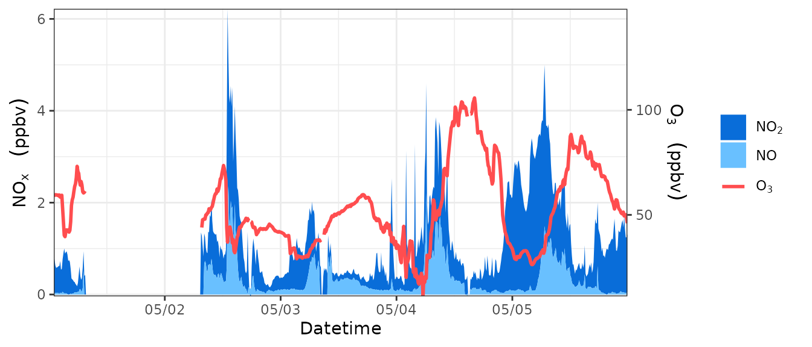
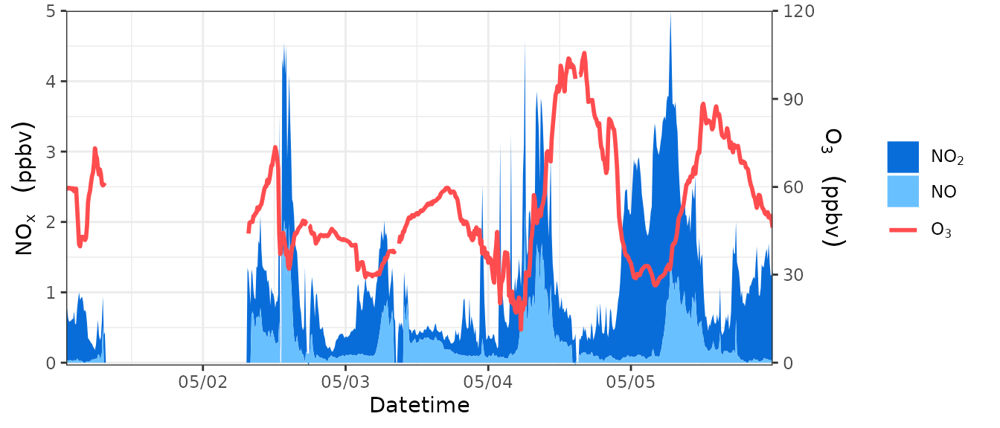
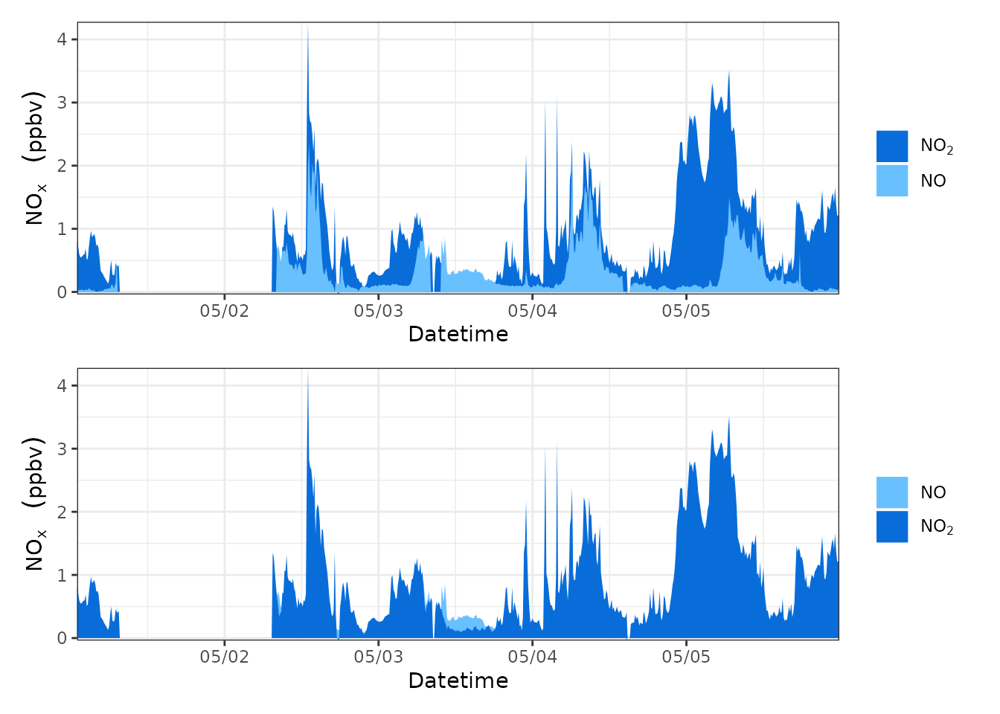
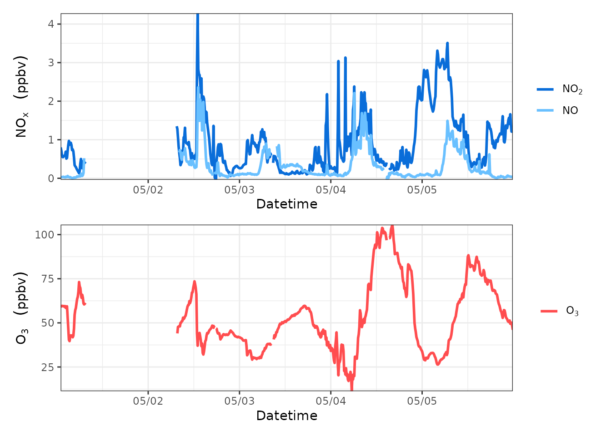
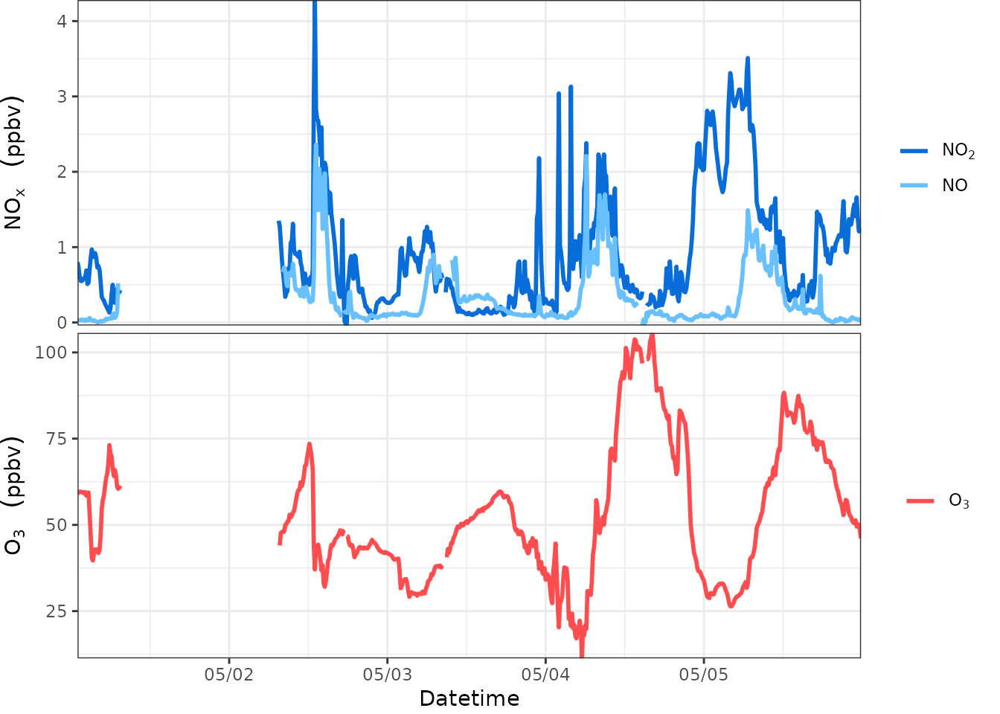
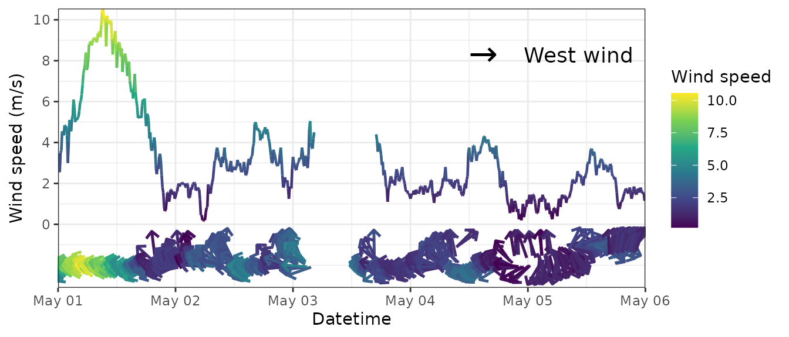
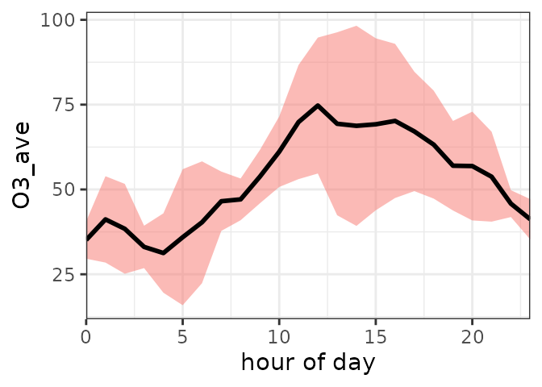
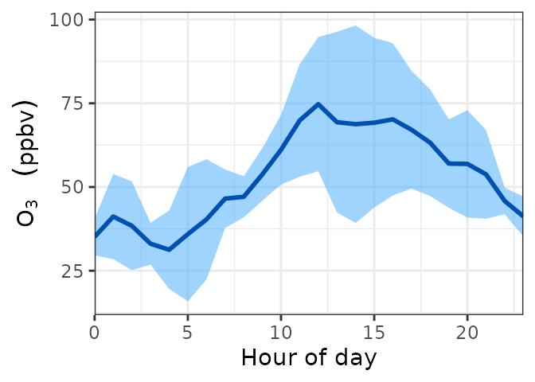
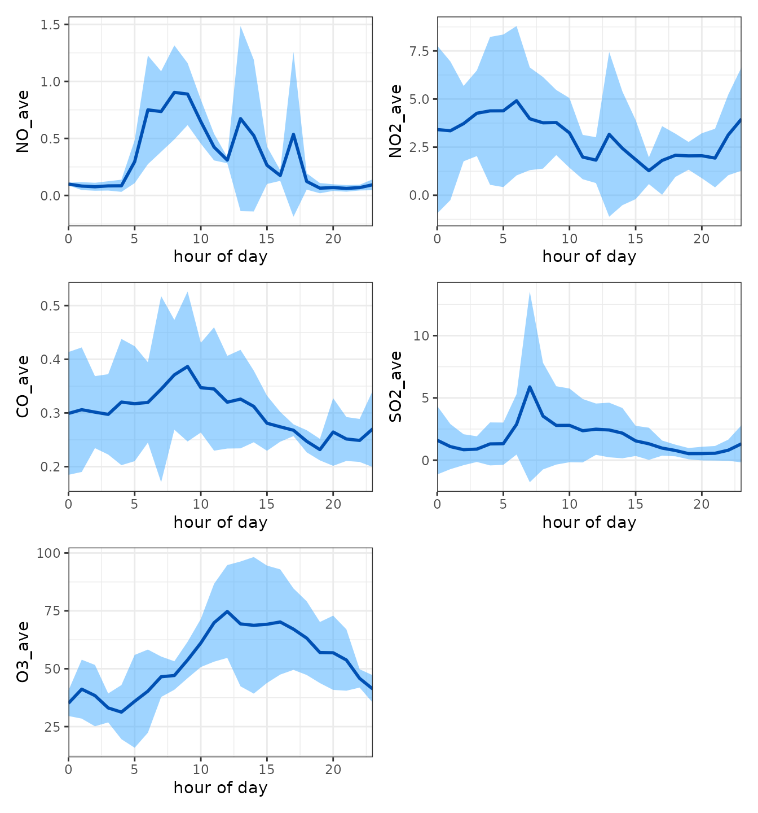
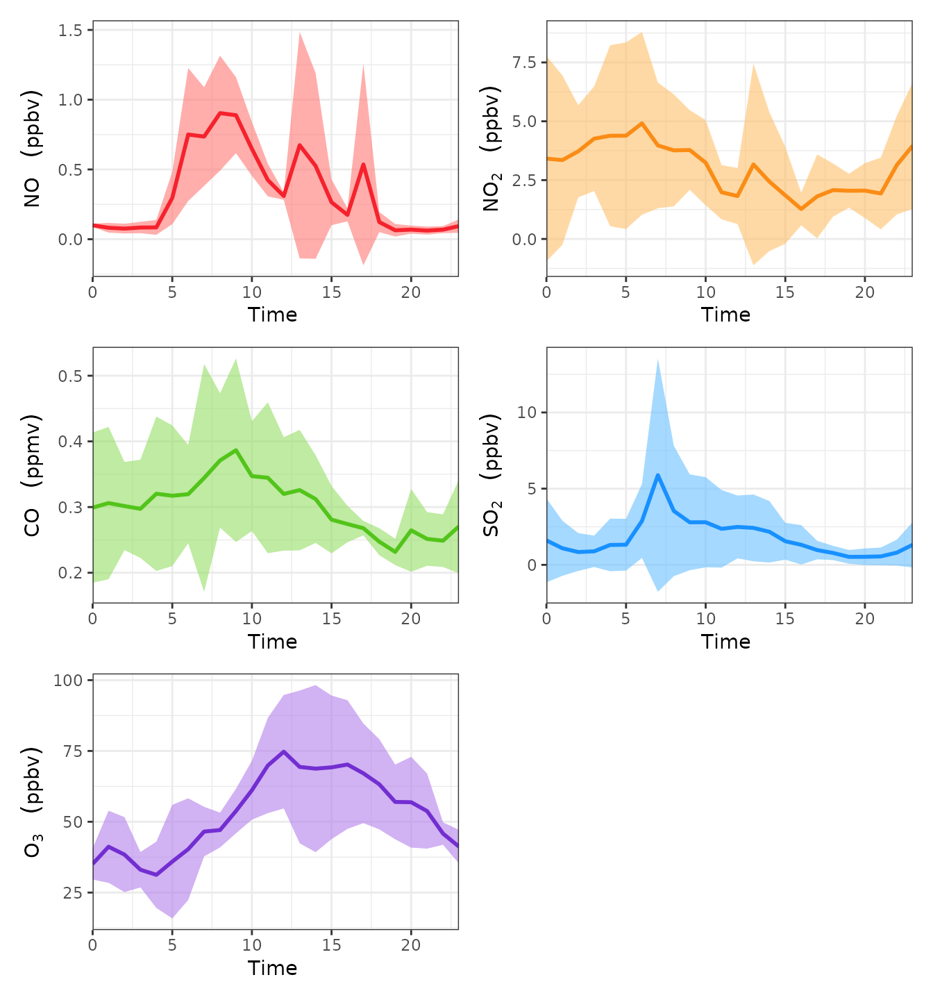

The ggplot2 package for R provides us with an elegant drawing system.
But how to draw the time series of field observation data more efficiently?
The foqat package provides a simpler module.
There are two advantages:
On the one hand, this module greatly reduces the difficulty of drawing time series of field observation data.
On the other hand, this module supports the GGplot2 syntax, which can be used to adjust and beautify the target graph.
To begin, we’ll load foqat and show one dataset in foqat:aqi is a dataset about time series of air quality with 1-second resolution. For a better presentation, we slightly manipulate aqi and met to generate aqids and metds.
And we also need to load ggplot2.
library(foqat)
library(ggplot2)
#pre-process the aqi data
aqids=trs(aqi, bkip="10 min")
#> Joining, by = "temp_datetime"
aqids$NO[aqids$NO>7]=NA
aqids$NO2=aqids$NO2*0.3
cols <- names(aqids)[2:6]
aqids[, 2:6]=round(aqids[, 2:6], 2)
#pre-process the met data
metds=trs(met, bkip="15 mins")
#> Joining, by = "temp_datetime"Plot time series
The geom_ts() allows you to plot time series easier and more efficiently.
Introduction
When we want to draw a time series plot, especially a combined time series plot, we need to consider three basic questions first.
1, which species (or parameters) to draw?
2、Which species to put on the left axis and which species to put on the right axis?
3, what types of these species are displayed (point, line, bar, area)?
After considering these three questions, we can further consider the fourth question: the beautification of the graph.
For these four issues geom_ts set up several types of parameters, you just need to fill in the parameters.
Species are referred to by column numbers in the table.
If there are two species drawn with the line type, then the line needs to have two colors in the color list, and so on for the other settings.
| How many questions does it belong to? | Parameters | Explanation | Examples |
|---|---|---|---|
| 1 | df | Data Table Name | aqids |
| 2 | yl, yr | Species placement left y-axis or right y-axis | yl=c(3,2), yr=6 |
| 3 | llist, plist, alist, blist | By what type (line, point, area, column) the species is displayed | alist=c(3,2), llist=6 |
| 4 | yllab, yrlab, xlab | Left and right y-axis labels, x-axis labels | xlab=“Time” |
| 4 | llab, plab, alab, blab | Various types of legend labels (list) | alab=list(bquote(NO[2]~" “), bquote(NO~” “)), llab=list(bquote(O[3]~” ")) |
| 4 | ltype, pshape, lsize, psize | Line type, point type, line size, point size | ltype=1 |
| 4 | lcc, pcc, aff, bff | Line color, point color, area fill color, column fill color | lcc=“#ff4d4f”, aff=c(“#096dd9”,“#69c0ff”) |
| 4 | ana, apos, bna, bpos | method for processing NA value in stacking Area and bar charts | ana=FALSE |
Example
Here we use aqids:
The following is an example of plotting NOX and O3 concentrations separately in a graph. Where NO and NO2 are stacked as area, using the left y-axis, and O3 is plotted as a line, using the right y-axis.
geom_ts(
df=aqids,
yl=c(3,2), yr=6,
alist=c(3,2), llist=6,
yllab=bquote(NO[x]~" "~(ppbv)), yrlab=bquote(O[3]~" "~(ppbv)), xlab="Datetime",
alab=list(bquote(NO[2]~" "), bquote(NO~" ")), llab=list(bquote(O[3]~" ")),
lcc="#ff4d4f", aff=c("#096dd9","#69c0ff"),
ana=FALSE
)
Adjust the range of left y axis and right y axis
yl_limit and yl_breaks allows you to adjust the ranges and breaks of left y axis in geom_ts().yr_limit and yr_breaks allows you to adjust the ranges and breaks of right y axis in geom_ts().
See this example:
geom_ts(
df=aqids,
yl=c(3,2), yr=6,
alist=c(3,2), llist=6,
yllab=bquote(NO[x]~" "~(ppbv)), yrlab=bquote(O[3]~" "~(ppbv)), xlab="Datetime",
alab=list(bquote(NO[2]~" "), bquote(NO~" ")), llab=list(bquote(O[3]~" ")),
lcc="#ff4d4f", aff=c("#096dd9","#69c0ff"),
ana=FALSE,
yl_limit=c(0,5),
yr_limit=c(0,120),
yl_breaks= seq(0,5,1),
yr_breaks= seq(0,120,30)
)
Set axis and legend label names
The geom_ts function supports the bquote syntax. For example, what you saw in the previous example: bquote(O[3]~" "~(ppbv))
Here are two diagrams, one showing how it is written and one showing the effect, which should be enlightening for you to see. The basic usage is all in there. (Image content from the link below)


Here is more information: https://trinkerrstuff.wordpress.com/2018/03/15/2246/
Swap layer order
Sometimes you may want to adjust the order of species or layers, for example, so that a species or a certain type of plot type is shown at the outermost part of the plot.
Thanks to ggplot2’s plotting system, we can do this easily.
For species on the same side of the same plot type, the order in the parameters determines their inner and outer order in the plot; those written at the back will be drawn on the outer side.
For example, in the following example, the only difference between the codes of the two plots is only that the column numbers of NO2 and NO (3 and 2, respectively) are arranged in a different order in the parameters.
p1=geom_ts(
df=aqids,
yl=c(3,2),
alist=c(3,2),
yllab=bquote(NO[x]~" "~(ppbv)), xlab="Datetime",
alab=list(bquote(NO[2]~" "), bquote(NO~" ")),
aff=c("#096dd9","#69c0ff"),
ana=FALSE,
apos="identity"
)
p2=geom_ts(
df=aqids,
yl=c(2,3),
alist=c(2,3),
yllab=bquote(NO[x]~" "~(ppbv)), xlab="Datetime",
alab=list(bquote(NO~" "), bquote(NO[2]~" ")),
aff=c("#69c0ff", "#096dd9"),
ana=FALSE,
apos="identity"
)
library(patchwork)
p1/p2
For different layers (different left and right sides of y-axis, different figure types), you can adjust them by layers in the result.
For example, in the following example, Figure 1 has two layers: one is the right y-axis + area map; the other is the right y-axis + line map.
We made a copy of Figure 1 to generate Figure 2, and then swapped the order of the two layers in Figure 2.
p1=geom_ts(
df=aqids,
yl=c(3,2), yr=6,
alist=c(3,2), llist=6,
yllab=bquote(NO[x]~" "~(ppbv)), yrlab=bquote(O[3]~" "~(ppbv)), xlab="Datetime",
alab=list(bquote(NO[2]~" "), bquote(NO~" ")), llab=list(bquote(O[3]~" ")),
lcc="#ff4d4f", aff=c("#096dd9","#69c0ff"),
ana=FALSE
)
p2=p1
p2$layers[c(1,2)]=p2$layers[c(2,1)]
library(patchwork)
p1/p2
Combine several time series plots
By the previous introduction, you already know how to plot regular time series graphs with geom_ts.
The next question is, how to combine these plots? For example, how to implement the common drawing method of stacking them up?
Thanks to ggplot2’s sibling, the patchwork package, this is made easy.
The most basic use of patchwork is just fantastic. Suppose you have two graphs, p1 and p2.
Just write p1+p2 and they’ll patch left and right; just write p1/p2 and they’ll stack up and down.
If you have several diagrams, everything is even more interesting, and you can even combine them by combining laws, e.g. (p1+p2)/(p3+p4)
If you want to learn more about patchwork’s “fancy operations”, please visit: https://patchwork.data-imaginist.com/
As an aside, let me tell you how you can stack several time series.
Following the syntax of geom_ts, I can write a p1 to represent the ozone time series graph and a p2 to represent the NOx time series graph.
Then load the patchwork package, write p1/p2, run the code, and voila.
p1=geom_ts(
df=aqids,
yl=c(3,2),
llist=c(3,2),
yllab=bquote(NO[x]~" "~(ppbv)), xlab="Datetime",
llab=list(bquote(NO[2]~" "), bquote(NO~" ")),
lcc=c("#096dd9","#69c0ff")
)
p2=geom_ts(
df=aqids,
yl=6,
llist=6,
yllab=bquote(O[3]~" "~(ppbv)), xlab="Datetime",
llab=list(bquote(O[3]~" ")),
lcc="#ff4d4f"
)
library(patchwork)
p1/p2
You can also further remove the timeline text from all the diagrams except the bottom one to make it look more compact.
Just add a string of code after the code for the figure without the timeline text as follows.
p+theme(axis.title.x=element_blank(),axis.text.x=element_blank(),axis.ticks.x=element_blank())
But remember, the premise of this combination of operations is that the time range of several time series is the same, otherwise it may cause misunderstandings!
(you can compare what is the difference between the code and the previous combination of graphs).
p1=geom_ts(
df=aqids,
yl=c(3,2),
llist=c(3,2),
yllab=bquote(NO[x]~" "~(ppbv)), xlab="Datetime",
llab=list(bquote(NO[2]~" "), bquote(NO~" ")),
lcc=c("#096dd9","#69c0ff")
)+theme(axis.title.x=element_blank(),axis.text.x=element_blank(),axis.ticks.x=element_blank())
p2=geom_ts(
df=aqids,
yl=6,
llist=6,
yllab=bquote(O[3]~" "~(ppbv)), xlab="Datetime",
llab=list(bquote(O[3]~" ")),
lcc="#ff4d4f"
)
library(patchwork)
p1/p2
If you feel that the two diagrams are a bit too far apart, try bringing them closer together by adding this string of code to the stacked diagram.
p1/p2&theme(plot.margin = margin(b=1))
You can compare how the code differs from the previous combination diagram.
p1=geom_ts(
df=aqids,
yl=c(3,2),
llist=c(3,2),
yllab=bquote(NO[x]~" "~(ppbv)), xlab="Datetime",
llab=list(bquote(NO[2]~" "), bquote(NO~" ")),
lcc=c("#096dd9","#69c0ff")
)+theme(axis.title.x=element_blank(),axis.text.x=element_blank(),axis.ticks.x=element_blank())
p2=geom_ts(
df=aqids,
yl=6,
llist=6,
yllab=bquote(O[3]~" "~(ppbv)), xlab="Datetime",
llab=list(bquote(O[3]~" ")),
lcc="#ff4d4f"
)
library(patchwork)
p1/p2&theme(plot.margin = margin(b=1))
Now, you should be able to plot regular time series graphs comfortably and quickly. Combining multiple species within a single plot, splitting axes, and combining multiple plots should be a piece of cake.
One-step method
Of course, if you’re tired sometimes, or if your boss only gives you 10 seconds, try geom_ts_batch():
geom_ts_batch(aqids)You can also add a little more embellishment.
Plot wind time series
The ggplot2 plotting system is not very good at plotting wind time series where the length of the arrow refers to the wind speed; we will always have the need to plot wind time series.
So, you try this function: geom_tsw().
Just tell it the table name, the wind speed and the wind direction are the first columns.
geom_tsw(metds, coliws=4, coliwd=5, mx = 0.7, my = 2.5)
Plot the time series of particle size distribution
tsplotp() allows you to plot wide form data.
The input is the dataframe of particle size data. The first column of input is datetime; the other columns are number concentration (N, unit: #/cm3) or log number concentration (dN/dlogdp, unit: # cm-3) for each particle size channel. Column names of the other columns are the middle particle size for each particle size channel.
Firstly, we need to pre-process the SMPS data:
dn_table = read.delim(system.file("extdata", "smps.txt", package = "foqat"),
check.names = FALSE)
dn1_table=dn_table[,c(1,5:148)]
dn1_table[,1]=as.POSIXct(dn1_table[,1], format="%m/%d/%Y %H:%M:%S", tz="GMT")
head(dn1_table[,1:5])
#> Time Start 7.91 nm 8.20 nm 8.51 nm 8.82 nm
#> 1 2021-06-07 00:01:46 0 0 0 0
#> 2 2021-06-07 00:05:26 0 0 0 0
#> 3 2021-06-07 00:09:06 0 0 0 0
#> 4 2021-06-07 00:12:46 0 0 0 0
#> 5 2021-06-07 00:16:26 0 0 0 0
#> 6 2021-06-07 00:20:06 0 0 0 0Plot it:
geom_psd(dn1_table,fsz=10)
Plot the average variation
geom_avri() allows you to plot average variation.
cave and cave are the column index of average variation and its standard deviation, respectively.
avri_aqi=avri(aqi, bkip = "1 hour", mode = "recipes", value = "day", st = "2017-05-01 00:00:00")
geom_avri(avri_aqi,cave=6,csd=11)
You can further beautify the image:
geom_avri(avri_aqi,cave=6,csd=11,alpha=0.5,lcc="#0050b3",
rff="#40a9ff", xlab="Hour of day",ylab=bquote(O[3]~" "~(ppbv)))
geom_avri_batch() allows you to plot average variations in batch.
The input data should contain both the average variations and the standard deviations. An example is a time series of 3 species. The second to the fourth column are the average variations, and the fifth to the seventh column are the standard deviations.
You can use the results of avri() as input directly.
geom_avri_batch(avri_aqi)
You can further beautify the image:
lcc=c("#f5222d","#fa8c16","#52c41a","#1890ff","#722ed1")
rff=c("#ff7875","#ffc069","#95de64","#69c0ff","#b37feb")
xlab1=list(bquote(Time~""),bquote(Time~""),bquote(Time~""), bquote(Time~""),bquote(Time~""))
ylab1=list(bquote(NO~" "~(ppbv)), bquote(NO[2]~" "~(ppbv)), bquote(CO~" "~(ppmv)), bquote(SO[2]~" "~(ppbv)), bquote(O[3]~" "~(ppbv)))
geom_avri_batch(avri_aqi, alpha=0.6, xlab=xlab1, ylab=ylab1, lcc=lcc, rff=rff, bquote=TRUE)